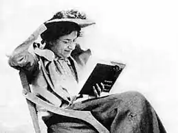
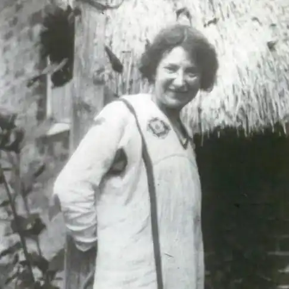

Елеанор Фарджон (англ. Eleanor Farjeon; 1881-1965) — англійська дитяча письменниця. Елеанор писала вірші, оповідання та повісті, притчі та міраклі, пісенні тексти до оперних спектаклів для дітей, але головним у її творчості були казки. Також на її рахунку ряд сатиричних оповідань для дорослих.
Елеанор Фарджон народилася в Англії 13 лютого 1881 року. Її батьками були англійський письменник Бенджамен Фарджон та Маргарет Джейн (Джефферсон) Фарджон, дочка американського актора Джозефа Джефферсона. Крім Елінор, у сім'ї було ще троє хлопчиків. У 1912 році в журналі "Панч" вона почала публікувати свої вірші про Лондон, які в 1916 році були видані першою окремою книжкою письменниці "Дитячі пісеньки старого Лондона", яка згодом неодноразово перевидавалася.
Широку популярність у СРСР здобула завдяки перекладам її казок "Сьома принцеса" та "Хочу місяць" (переклади Ольги Варшавер, Ніни Демурової та ін.). 1955 року Елінор Фарджон була нагороджена за твори для дітей медаллю Карнегі. У 1956 році за рішенням Міжнародної ради з дитячої та юнацької літератури (IBBY) ЮНЕСКО Е. Фарджон стала першим лауреатом премії імені Ганса Християна Андерсена. Цю нагороду неофіційно називають дитячою "Нобелівською премією". Елеанор померла на батьківщині, 5 червня 1965 року, на 85-му році життя.